Digitizing Letterform Designs
Table of Contents
- Introduction
- Points
- Contours
- The master grid
- Digitizing art work
- Creating outlines in the TrueType format
Introduction
This chapter provides an overview of the major considerations in digitizing letterforms: digitizing letterform designs for the TrueType format. A complete specification of the format in which TrueType glyph outlines are represented in a font file is provided in TrueType Font files.
Points
At the lowest level, each glyph in a TrueType font is described by a sequence of points on a grid. While two on-curve points are sufficient to describe a straight line, the addition of a third off-curve point between two on-curve points makes it possible to describe a parabolic curve. In such cases, each of the on-curve points represents an end point of the curve and the off-curve point is a control point. Changing the location of any of the three points changes the shape of the curve defined.
The definition of such a curve can be made formal as follows: given three points p0, p1, p2, they define a curve from point p0 to point p2 with p1 an off-curve point. The control point p1 is at the point of intersection of the tangents to the curve at points p0 and p2. Thus p0, p1 is tangent to the curve at point p0. Similarly p2, p1 is tangent to the curve at point p2. The curve specified by these three points is defined by a parametric equation. For t ranging from 0 to 1, the position of p(t) is as shown:
Curves of the type just described are Bezier quadratic curves. A quadratic curve is shown in FIGURE 1.
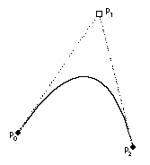
FIGURE 1
A quadratic curve defined by three control points.
Curves that are parabolic in nature can be represented by a single quadratic curve. More complex curves can be represented by several connected curves. The tangent-continuous joining of such components produces a quadratic spline. Such a joining occurs when curves are connected in a manner such that their shared points have the same tangent.
Connected quadratic curves have first degree continuity and tangent continuity if each curve point is on the line connecting the two flanking control points.
Such a curve is shown in FIGURE 2. Here two curves, p0, p1, p2 and p2, p3, p4 are connected at their common point p3.Note that in the illustration, points p1, p2 and p3 are colinear.
FIGURE 2
Quadratic curves sharing a common on-curve point
It would also be possible to specify the curve shown in FIGURE 2 with one fewer point by removing point p3. Point p3 is not strictly needed to define the curve because its existence implied and its location can be reconstructed from the data given by the other points.
FIGURE 3
A quadratic curve with an implied on-curve point
By combining curves and straight lines, it is possible to build up complex glyphs. Such a letterform is shown in FIGURE 4 below. The on-curve points that define the glyph are shown as small black circles. The off-curve points are shown as small open circles.
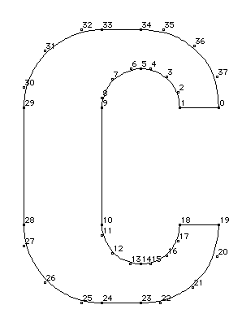
FIGURE 4
A glyph outline with on-curve and off-curve points
Contours
In relatively simple glyphs like the letter c shown in FIGURE 4, the sequence of points defining the glyph combine to form a closed shape termed a contour. In more complex glyphs like the letter B shown in FIGURE 5 below, sequences of points define three distinct closed shapes, each being a contour.
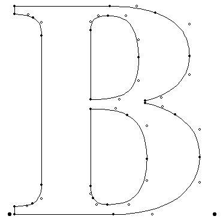
FIGURE 5
A glyph outline with three contours
As can be deduced from these examples, glyphs can have zero or more contours. (The space glyph, which has an advance width but no other visible manifestation, has zero contours.)
The direction of contours:
In defining a contour, a font manufacturer must keep a number of rules in mind. The points in a contour must be ordered consecutively beginning with, in the case of the first contour, point 0. Subsequent contours will begin with the first unused number. It must be possible to trace around each contour by going from point to point along the contour in the order specified in the font file.
The order in which points are specified is significant because it determines the direction of the contour. The direction is always from lower point number toward higher point number.
The direction of a glyph's contours is used to determine which portions of the shape defined by the contours is filled(black) and which portions are unfilled (white).
In making this determination, TrueType uses the non-zero winding number rule. See Distinguishing the inside from the outside of a glyph for information on the application of this rule.
Intersecting contours:
TrueType allows for the possibility that two contours might intersect. This feature can be convenient in describing the outlines of letters such as the Q. In such cases, the non-zero winding number rule is invoked to determine the appropriate fill. Black filled areas when placed over other black filled areas will remain black. An example of this effect is shown in FIGURE 6 below.
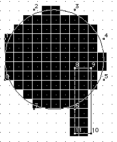
FIGURE 6
Overlapping contours
Compound glyphs:
Often it is convenient to combine some of the glyphs in a font to produce new glyphs. This is commonly done to produce accented characters in cases where the font includes both the base character and the accent character. TrueType allows for these combinations through the mechanism of compound glyphs. Some glyphs that might be created in this manner are shown in FIGURE 7.
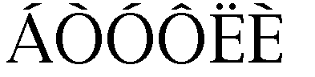
FIGURE 7
Component glyphs
Compound glyphs consist of a base glyph and a second glyph that is added to produce a new glyph. The new glyph combines the two components to create the new compound form. If desired, glyphs can be created using more than two components.
Compound glyph placement
To aid in the placement of the additional glyphs relative to the base glyph, information must be provided specifying the offset of the subsequent glyphs from a point in the first glyph.
Each of the glyphs combined to form a compound glyph can be scaled by a different amount. This might be useful, for example, in creating fractions by combining the fraction glyph and two digits.
Each of the glyphs that make up a compound glyph can have associated instructions. The compound glyph as a whole can also have instructions.
A detailed description of the specification for compound glyphs is given in Compound glyphs.
The master grid
The points that make up a glyph outline specification are located on a grid whose units are indivisible and of a size defined by the creator of the font. These units are termed font-units.
The grid is a two-dimensional coordinate system whose x -axis describes movement in a horizontal direction and whose y -axis describes movement in a vertical direction. The grid origin has the coordinates (0,0). The grid: sizegrid is not an infinite plane. Each point must be within the range -16384 through +16383 font-units.
In creating the glyph outlines, the font creator makes use of an imaginary square that derives from the old typographic concept of the em square. This square can be thought of an a tablet on which the characters are drawn, although it is permissible for characters to extend beyond the tablet or em square. It is the size of the font-unit relative to the size of the em square that determines the granularity of the grid. In other words, the resolution of the grid is a function of the number of font-units per em.
The greater the number of font-units per em, the greater subtlety of design that can be represented in the font file. In determining what is a suitable grid granularity, the font designer should take into account the maximum resolution of the potential output device and allow for possible loss of precision in data conversion. Outline scaling will be fastest if the units per em is a power of two. For example, the Apple core fonts are designed on a grid with 2048 units per em.
FIGURE 8 shows two different grids. The grid on the left cannot represent the subtlety of original design for the letter A. The grid on the right, with four times the number of units per em, comes closer, though a finer granularity is needed to faithfully render the original design.
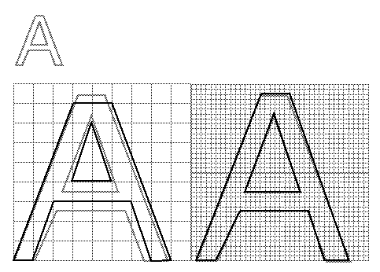
FIGURE 8
Defining the master outline.
Placing glyphs in the grid
The coordinates which define a glyph's shape also determine that glyph's placement relative to the coordinate grid. While there is no formal requirement that glyphs have a consistent relationship to the grid, in practice, applications depend upon the existence of some convention to aid in the layout of text.
In Roman fonts, which are intended to be laid out horizontally, a y -coordinate of 0 typically corresponds to the baseline of the font. No standard meaning is associated with an x -coordinate of 0 but applications will benefit if font foundries choose a standard meaning. A common convention is to place the glyph origin so that the value of the left edge of the glyph will equal the left side bearing. This option is illustrated in FIGURE 9. It is also possible to place the aesthetic center of glyphs at the x -axis as in FIGURE 10.
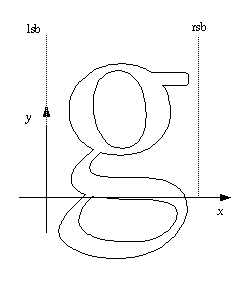
FIGURE 9
Left side bearing of glyph is x-zero.
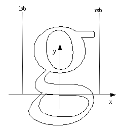
FIGURE 10
Aesthetic center of glyph is x-zero.
Non-Roman fonts may wish to use other conventions for the meaning of the x -axis and y -axis. For good interaction with highlighting and carets, however, it is desirable that the body of the character be roughly centered within the advance width. A symmetrical character, for example, should have equal left and right side bearings. For example, a glyph might be placed with its aesthetic center at the x-coordinate value of 0. Glyphs placed in a column such that their x -coordinate values of 0 are coincident will appear to be nicely centered when rendered. This option might be used for Kanji or other fonts that are typeset vertically. An example of such a placement is shown in FIGURE 11.
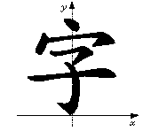
FIGURE 11
A Kanji character with x-zero at the aesthetic center of the glyph
Another alternative is to place each glyph so that its leftmost extreme outline point has an x -value equal to the left-side-bearing of the glyph.
While in the days of metal type, glyphs could not extend beyond the em square, digital typefaces are not so constrained as is illustrated in FIGURE 12. The em square may be made large enough to completely contain all glyphs in a font, including accented glyphs. Or, if it proves convenient, portions of glyphs may extend outside the em square. Since TrueType fonts can handle either approach, the choice depends upon the preference of the font manufacturer.
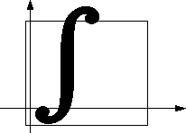
FIGURE 12
Character extending outside of the em square
Digitizing art work
A TrueType font might originate as a set of designs on paper. In such a case, the drawing must be converted into digital data. The problem of digitizing a paper design can be solved in either of two ways. The art work can be scanned and the scanned image used as a template. Alternatively, a hand-held digitizing device can be moved over the art work with critical points describing the glyph's shape recorded. Critical points are corner and tangent points. Curve points that fall at extrema are also important.
Hand digitization has the advantage that it allows the person doing the work to smooth out any roughness in original image. When digitizing art work, the size of the drawing is important since it will be the key factor in determining the accuracy of the final result. Increasing the size will give finer control of detail. As a rule of thumb you should digitize art at an accuracy that is two times that you wish to achieve in the final result. For example, to digitize a TrueType fonts at 2048 units to the em you must take into account the fact that some accuracy is lost in digitizing. This means that if your digitizing tablet has 300 points per inch, you will need to use a drawing that is at a minimum 7 inches by 7 inches in size and possibly 13 by 13 inches. (2048/300=6.28)
Those who are most comfortable working on the screen may prefer to scan in glyphs images and use the scanned image as a guide. It is also possible to create original art work directly on the computer screen using a mouse. A large monitor is an advantage in such work but, without a high resolution display, fitting curves precisely may necessitate zooming in on sections of curve.
Creating outlines in the TrueType format
Except in the case of glyphs composed of straight lines and parabolic curves, there is no single best description of the curves that describe a particular glyph. The problem inherent in digitizing a glyph is one of finding an acceptable solution for the intended use.
A good glyph outline is one that preserves the appearance intended in the original design. For most typefaces, curves should be smooth with no unintended bumps, flat spots or pits. Occasionally, a typeface design may make use of an unevenness in the appearance of curves.
In looking for bumps, be sure to distinguish between those that are due to flaws in the original outline of a character and the inevitable bumps that are the product of digitization on a low resolution device.
How closely must the curves used resemble the intended glyph design? For designs developed directly in the TrueType format, the answer is a simple one. The curves used will define the design exactly. A more complex problem arises when converting from some other format or when digitizing a paper design. This problem is addressed in Converting Outlines to the TrueType Format.
How many points are necessary?
In describing a curve you should use neither too few nor too many points. Often an arc can be described by as few as 3 to 4 points. Curves with a small radius of curvature and curves with inflections will require many more points to faithfully render with quadratic curves. In considering the number of points needed to faithfully render an outline adding points will not necessarily produce a better result. The fewer points that are used to describe a curve, the less space that is needed to store each glyph description and hence the more compact the font. Fewer points also lead to faster scaling. Too few points, however, can result in loss of fidelity to original design. It is therefore desirable to use enough points to faithfully translate the shape of a glyph but not so many that there is a needless loss of space or speed in scaling. In addition to the loss of space and speed, an excessive number of points can result in warbling (rapid modulations in the shape) due to noise in the data or roundoff error. Finally, too many points can also make a font harder to instruct.
FIGURE 13, "Three circles too few(left), too many(middle), just right (right)." shows three different attempts to define a circle. In the leftmost example, four off-curve points are used but are insufficient to produce a round shape. The rightmost example uses 8 off-curve points which results in a circular curve that can be made a perfect circle with the exception of an arbitrarily small error factor. The middle example, also produces an accurate circular shape but uses more points than are necessary. In particular the on-curve points, located at the midpoints of the tangents to the curve, add no extra information and might have been omitted.
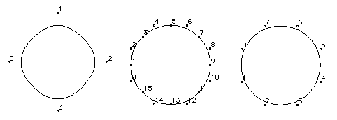FIGURE 13
Three circles too few(left), too many(middle), just right (right)
Where should points be located?
A glyph outline should have points on extrema. That is, the curve positions with minimum x-value, minimum y-value, maximum x-value and maximum y-value should be marked by curve points. Some systems for representing outline fonts require an on-curve point at the point of tangency. This is not required in TrueType if the tangency point is midway between the flanking off-curve points..
It is, however, important to put an on-curve point at an inflection point in a curve. Inflection points are the point on the curve where the curvature is zero. An inflection point can be implied if it happens to be at the midpoint of the line connecting the off-curve points.
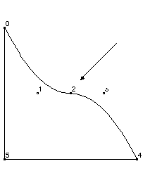
FIGURE 14
An inflection point